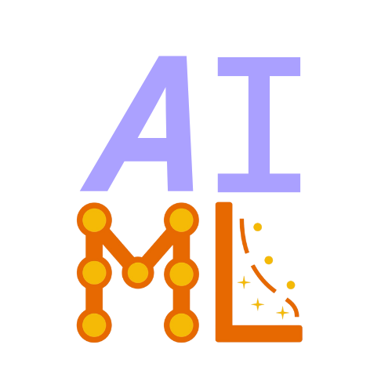

Welcome to my website!
I'm a Data Scientist and ML engineer focused on building practical AI systems, from real-time computer vision and multimodal RAG to predictive analytics and data pipelines.
I lead technical projects, ship production dashboards, and enjoy turning messy data into clear decisions.
Education
Expected Spring 2027
San Jose State University, San Jose, CA
Master of Science in Artificial Intelligence, GPA: 4.00/4.00
Related coursework: Machine Learning (CMPE 257), Reinforcement Learning (CMPE 260), AI & Data Engineering (CMPE 252), Database Systems (CMPE 180B), Operating Systems (CMPE 180C).
Graduated Spring 2025
San Jose State University, San Jose, CA
Bachelor of Science in Data Science, GPA: 3.63/4.00 (Dean's Scholar)
Related coursework: Intro to Artificial Intelligence (CS 156), Intro to Machine Learning (CS 171), Intro to Database Management Systems (CS 157A), Data Visualization (CS 133), Processing Big Data (CS 131), Data Structures & Algorithms (CS 146), Applied Probability & Statistics I (MATH 161A), R Programming (MATH 167R).
Experience

Funding & External Outreach, AI & Machine Learning Club, SJSU, San Jose, CA
Manage internal funding and external outreach to companies; secure sponsorship and support for club events and initiatives. Support creation and execution of club events (workshops, talks) by coordinating with industry partners and event logistics.
Engineering Project Lead, AI & Machine Learning Club, SJSU, San Jose, CA
Led technical and operational execution for applied ML and CV projects, from architecture to delivery. Designed and improved ML pipelines using FastAPI, Python, and rule-based components. Supported team members with ML engineering practices, documentation, and workflow organization.
Business Consultant, Shadi Gala, San Jose, CA
Created Python scripts and SQL pipelines to segment 500+ transactions, engineer features, and improve forecasting accuracy for demand and inventory. Developed interactive dashboards integrating SQL, Google Analytics, and real-time KPIs; reduced reporting time 40% and drove 90% increase in ticket sales via data-driven optimization.
Business Analytics Intern, Shadi Gala, San Jose, CA
Designed SQL queries and Python/Pandas workflows to segment 500+ user transactions, identify purchasing trends, and improve forecasting accuracy. Supported SEO and analytics; developed interactive dashboards joining SQL with Google Analytics data, reducing manual reporting time and enabling real-time KPI tracking.
Personal Projects
Industrial Multimodal RAG with Cross-Encoder Reranking
2025 · FastAPI, ChromaDB, MiniLM, Gemini
End-to-end multimodal RAG for industrial manuals: image-to-text summarization and text chunking unified in a single embedding space (ChromaDB, MiniLM).
Added cross-encoder reranking to improve retrieval quality and reduce hallucination; deployed FastAPI backend with Gemini for generation.
paperlink
2025 · TypeScript
Cal Hacks Lava track runner-up. A tool to discover and link research papers—surf related work, explore citation graphs, and quickly find papers that cite or are cited by what you're reading. Built to make literature review and paper discovery faster for researchers and students.
Fill-Swift
2025 · Chrome Extension, JavaScript
Chrome extension to autofill job applications. Designed to integrate with personal tracking spreadsheets for application management.
Academic Projects
Predictive Analytics for Safer Roads
2025 · PyTorch, Plotly Dash, BigQuery, GCP
Architected traffic accident severity prediction pipeline using PyTorch on 6.5M+ records in BigQuery (GCP); engineered 20+ weather and road features with scalable preprocessing.
Deployed Plotly Dash dashboard with 10+ interactive visualizations; model achieved 85%+ accuracy on severity classification and reduced manual analysis time by 50% via automated reporting.
Food-Image-Classification
2025 · PyTorch, ResNet50, Food11
Course project (CS 171 Intro to ML) with Devin Chau. We built a ResNet-50 CNN to classify food images using the Food-11 dataset (16,643 images, 11 categories: bread, dairy, desserts, eggs, etc.) and validated the pipeline on Food-MNIST. Goal: support food deserts and healthier choices by enabling calorie tracking and future recipe generation (LLMs) for underserved communities. Preprocessing included dataset restructuring, Bash automation, data augmentation (rotation, flip, scaling), and normalization; we fine-tuned the pretrained model in PyTorch and achieved ~70%+ training accuracy with confusion-matrix evaluation. Future work: Swin Transformer for higher accuracy and culturally tailored recipe outputs. MIT License.
Club Hub
2024 · JavaScript, University club management
A comprehensive platform for university club management. Built to help students discover, join, and manage club activities.
Contributors: Nathan Cohn, Nathan Durrant, Aaron Sam, Hoang Nguyen.
BRAF Inhibitor Predictor
2024 · scikit-learn, Python
Machine learning project using scikit-learn to identify potential small-molecule inhibitors for BRAF protein mutations in cancer drug discovery. MIT License.
Time Management Clock
2024 · Python
Python-based clock application for time-management monitoring and improvement.
Technical Skills
Languages: Python, JavaScript, SQL, C++, R
ML & CV: PyTorch, TensorFlow, Scikit-learn, MediaPipe, OpenCV, MiniLM
Cloud & Data: GCP, AWS, Vercel; BigQuery, PostgreSQL, MySQL
Tools: Git, Docker, VS Code, Ubuntu
Climbing
I love bouldering, and my focus is on sending hard boulders outdoors. My current goals are to send V11 indoors and to hit +120% max pull-up. Here is some of my climbing-related media:
Favorite outdoor sends:
The Beak (V3), Castle Rock State Park
The Beak Mantle (V5), Castle Rock State Park
The Ramp (V4), Mortar Rock Park, Berkeley
Sunshine (V5), Mortar Rock Park, Berkeley
Blog
Notes and reflections on events, talks, and experiences—similar to what I share on LinkedIn.